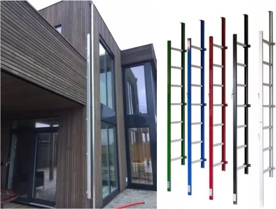
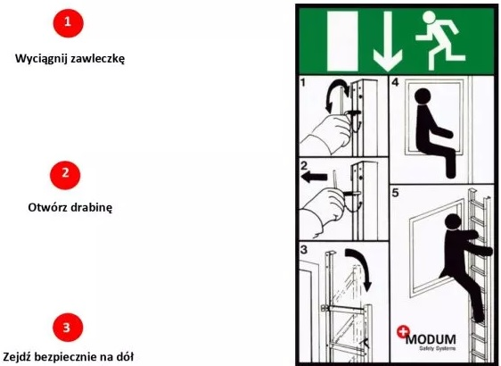

MODUM - drabina ratunkowa
Drabina ratunkowa Modum została zaprojektowana i wyprodukowana w Danii, wykonana jest z anodyzowanego aluminium i objęta zostałą 15 letnią gwarancją
Smukły, elegancki profil o szerokiej palecie barw doskonale komponuje się z bryłą budynku, zapewnia bezpieczeństwo mieszkańcom i jest gotowy do użycia w ciągu kilku sekund.
Drabina Modum jest dostępna we wszystkich kolorach palety RAL Drabina MODUM to idealne rozwiazanie zapewniające komfort bezpieczeństwa z zachowaniem estetyki budynku.
Niezwykle łatwa w instalacji - prosty i intuicyjny montaż pozwala na bezproblemowe wykonanie prac.
W razie konieczności drabina jest gotowa do użycia w przeciagu kilku sekund
Wystarczą trzy kroki: Właściwości drabiny ratunkowej MODUM
Konstrukcja z anodyzowanego aluminium i stali nierdzewnej zapewniają doskonałą jakość i trwałosc.
Profile są idealnie dopasowane, a drabina jest całkowicie odporna na warunki atmosferyczne i nie wymaga zadnych zabiegów konserwacyjnych
Smukła składana konstrukcja po zamknięciu ma zaledwie 72mm głębokości
Antypoślizgowe szczeble po zamknięciu drabiny są ukrywane wewnątrz profilu.
Zawleczka oweirająca drabinę jest umieszczona na górnym jej krańcu, co uniemożliwia otwarcie z dołu.
Alternatywą są drabiny z zamkiem Ruko, który za pomocą klucza pozwala otworzyć drabinę z poziomu gruntu.
Opcjonalnie drabina współdziała z uprzężami Modum
Drabina Modum legitymuje się raportem z testów SP Technical Research Institute, Szwecja.
Produkt zatwierdzony przez SINTEF Teknisk Godkjenning, Norwegia.
Drabina ewakuacyjna Modum posiada atest zgodny z normą europejską NS-EN 131.
Systemy bezpieczeństwa Modum zapewniają spokojny sen całej rodzinie.
Drabina Modum jest doskonałym elementem zapewniajacym bezpieczeństwo domów i biur.
Wszędzie tam, gdzie dobro mieszkańców jest naszym priorytetem, a komfort spokojnego snu w wymarzonym domu jednym z kluczowych czynników jaki chcemy zapewnić - nie wolno zaniedbać drogi bezpiecznej ewakuacji.
Dziś możemy to zapewnić z zachowaniem estetyki i elegancji każdego budynku.
Stabilność obciążeniowa dla drabiny o dł. 2.4m:
Stabilność pionowa: 9.5 kN = 969 kg.
Stabilność pozioma: 2 kN = 204 kg.
Wymiary:
zamknięta: 72 mm gł. x 47 mm szer.
otwarta: 398 mm gł. x 47 mm szer.
waga: 3,1 kg na metr biezący